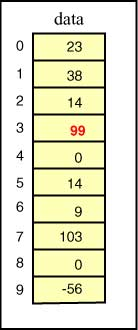

Arrays verwenden

|
 |
| vorher | nachher |
|---|
Jeder Slot eines Arrays enthält einen Wert des gleichen Typs.
Zum Beispiel, Sie können ein Array von int haben,
ein Array von double und so weiter.
Sie können ein Array von Objektreferenzen haben. Das wird in einem späteren Kapitel besprochen.
Das linke Array enthält Daten des Typs int.
Jeder Slot enthält ein int.
Ein Slot dieses Arrays kann überall da verwendet werden,
wo eine Variable vom Typ int verwendet werden kann.
Zum Beispiel
data[3] = 99 ;
...funktioniert wie eine Zuweisung an eine int-Variable.
Nachdem sie ausgeführt wurde, sieht das Array wie in der rechten
Abbildung aus.
Der Wert in Slot 3 des Arrays hat sich geändert.